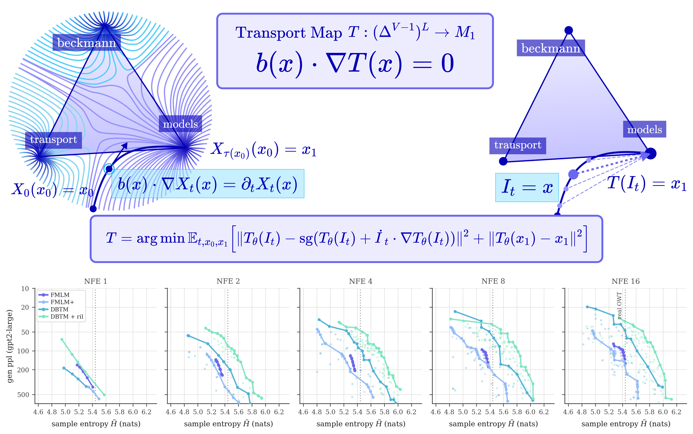
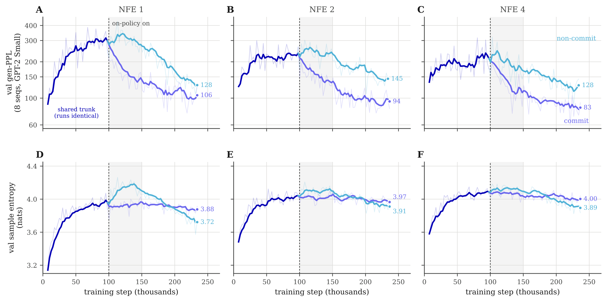
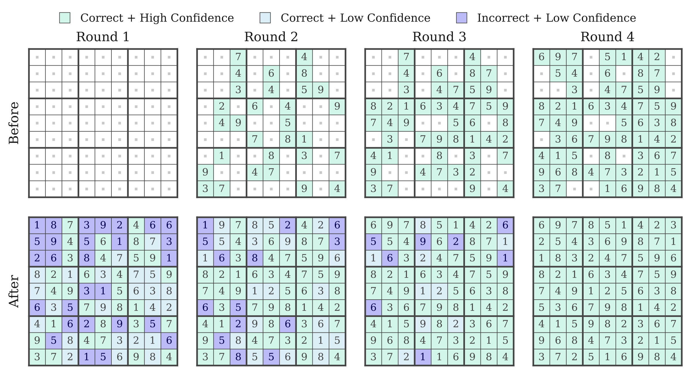
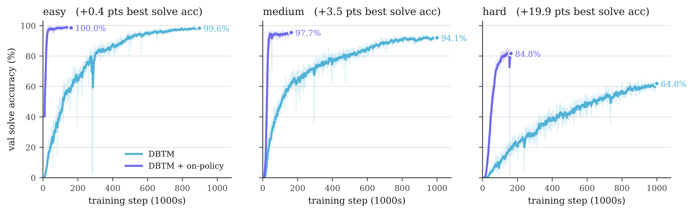

Discrete diffusion and flow models are a promising alternative to autoregressive language models, but compressing many-step sampling into fewer steps typically requires distilling a pretrained teacher model. This caps the student at the teacher's quality and requires a costly two-stage training pipeline. We introduce Discrete Beckmann Transport Models (DBTM), built on a time-independent flow whose autonomous transport map provably carries any point in the ambient space to a fixed point on the vertices of the simplex in a single step. We show that this fixed-point property is characterized by a conservation equation whose residual can be minimized directly from data, removing the requirement for a teacher flow and time conditioning. Under this construction, a partially trained map corresponds to the flow truncated at finite time, so generation reduces to iterating one map until it reaches a fixed point. We further extend the map to a partial-context interpolant where additional function evaluations act as refinement steps rather than ODE integration steps. On language modeling and reasoning tasks, DBTM enables one- and few-step generation that improves quality and accuracy over discrete diffusion and continuous flow baselines.
Autonomous flow on the simplex
Represent discrete tokens as the vertices of a simplex. An autonomous flow moves toward these vertices using a velocity field that depends only on the current state—not on time.
Stable attractors, straighter paths.
The autonomous field has stationary basins at the vertices. The time-dependent field’s attractors change during interpolation, bending its trajectories. The remaining panels quantify path straightness and commitment time.
The autonomous flow has stable equilibria at the data vertices and straighter trajectories than the time-dependent flow.
From autonomous flow to a transport map
Following the autonomous flow to its endpoint defines a transport map $T$. Every point along a trajectory shares the same endpoint, so the map can take a noisy state directly to a data vertex in one step.
Autonomous flow $X_s$
$s\to\tau(x)$ →
Transport map $T$

The endpoint map.
The autonomous flow (left) and the map that sends points along a trajectory to the same data vertex (right).
The endpoint map solves a conservation equation, with the clean vertices fixed:
This gives a direct training objective.
Regress the map onto a frozen copy of its own prediction plus an Euler correction, and enforce the boundary condition on clean data. No pretrained teacher flow or time conditioning is required.
A partially trained map approximates a finite-time flow. Reapplying the same map advances the state toward its fixed point, turning a one-step generator into a model that can refine its output.
Training objective and algorithm
With $T_\theta=\operatorname{softmax}(f_\theta)$, the transport and supporting objectives are
Here $\mathcal{C}$ is the set of committed tokens, $\mathcal{K}$ contains the self-composition depths, and $\text{sg}$ denotes stop-gradient.
Boundary supervision fixes clean data, while anchor supervision is applied after the endpoint becomes identifiable. The phase-transition analysis gives $t^\star=1-(1+\sigma\sqrt{2\log V})^{-1/a}$. A late-training semigroup loss encourages agreement with repeated applications.
Algorithm 1 · Train the autonomous transport map
Input:
noise–data pairs $(x_0,x_1)$, map $T_\theta$, anchor time $t_{\mathrm{anchor}}$, and loss weights.
Sample a minibatch, interpolation times, and clean context positions $\mathcal C$.
Build the partial-context interpolant $I_t(\mathcal C)$ and its derivative $\dot I_t$.
Regress $T_\theta(I_t)$ onto $\operatorname{sg}(T_\theta(I_t)+\dot I_t\cdot\nabla T_\theta(I_t))$ on uncommitted positions.
Add boundary cross-entropy on clean data and anchor cross-entropy when $t>t_{\mathrm{anchor}}$.
When enabled, add late-training semigroup consistency, refinement-in-loop supervision, and the token-quality objective.
Average the weighted losses over the minibatch, update the parameters, and repeat until convergence.
Unconditional language modeling
DBTM produces a clean-sequence proposal in one evaluation. Additional evaluations refine the proposal, improving generation quality while retaining diverse text. On OpenWebText,
DBTM reaches 52.2 generative perplexity in four NFEs
, with sample entropy 5.26.
LM1B.
DBTM and refinement-in-loop training extend the quality–diversity frontier. The dotted line marks the real-data entropy of 4.336.
Example generations
LM1B samples from the paper at 1, 2, 4, and 8 refinement rounds. Generative perplexity and entropy are measured per sample.
LM1B
DBTM · 1 NFEGen. PPL 75.64 · Ent. 4.05
[CLS] will take been both by the american who have more than its the decision. [SEP] i had been called on the same called as issue is to go on a last year by the ends for the. [SEP] we will be that way of an were only a new president by the financial committee he said. [SEP] the government's decision to be a key field of his position and with who party. [SEP] " there is a first time and they would continue to be an lead by the american crisis in a day. [SEP] " would may be well to in well - of - day, and she claimed be a long - back to the [SEP]
DBTM · 2 NFEGen. PPL 44.76 · Ent. 4.03
[CLS] part. [SEP] the film also will be scheduled in the new time. [SEP] the man is a first day, and if they go's didn't want to have been. [SEP] the better time off with the end of work, the problemss are trying to try for all people to get my results. [SEP] he could not go being held in an first days for the first his long term. [SEP] she and there should have been in his job, because it has going to be the best in the end. [SEP] he said he has also have made in a next year. [SEP] but the new bank will to times with an [SEP]
DBTM · 4 NFEGen. PPL 42.45 · Ent. 4.05
[CLS] in london. [SEP] this is a problem for the world, but that we are in the new world when the economy was the way to start the talks. [SEP] but but he could have been left out over the face of the season. [SEP] she has been released from the country and his top to work. [SEP] it would be a right to the public government with the city in india in the uk's country. [SEP] " she has no, there is all going out for her problems, " it was the head of her office that was appointed by a government and the company commander to see a livings - - class time, [SEP]
DBTM · 8 NFEGen. PPL 46.92 · Ent. 4.03
[CLS] for his case. [SEP] the president's president, who was a director with the same time, said he will not be a video conference on wednesday. [SEP] the party was just going to be going in a five - year - - after'm in his campaign, the president said. [SEP] he said he has been convinced that it has been a military operation to be made as a new threat from the government of the part of the world's global development of terrorism that was announced on friday. [SEP] it have been an opportunity for the minister, at markets and services, and that is on the first quarter of the day is [SEP]
OpenWebText
Length-1024 samples from DBTM with linear attention and refinement-in-loop training.
DBTM + ril · 16 NFEGen. PPL 45.5 · Ent. 5.58
[END]...I mean, I think we started at the end of last year to figure out what we're doingre doing right now. And mean… when you look at your [data], you know that about $100,000 per year — That sounds pretty hard; i'm still sure little bit." But I think this is going to increase increased by about $100,000 per year — That's pretty single very important! This is very important and it's 'sthe single most important thing in our history. And so far i've've seen huge number million Americans coming across every day months' past decade...Our population has increased by about $100,000 per year — those people who don't caretakers." This is consistent with the United States — basically what's called “the United Kingdom” which translates into about $100,000 per year — What happens happening right?
AndIt's called “the United States Of America” which " says "You'll say that this country is worth less than $100,000 annually,000-$100 per year, and then we’ll be able access through some sort of so-called "takers." But at exact same time when we comes places where we’re going to be able to make those kinds, we can make those kinds right now, but I don't becauset really think there is no best way to do something We don't becauset know what it is important for us.
I think it's really very important because I think it's important for us to do something. The interesting thing about'vesurveillance since America is that when living love this country we are going to come up with something like this: What [What_surveillance?" There—A lot those people living love the United States] [that wasnt true]. They thought they were going to do something like — even though they were going would have enough opportunity to do something like this.)
For many countries around the world, the problem is probably maybe two or two years ago when somebody thought they’re going to do something like "surve surveillance." But I think there is going to be a lot amount of work that needs to happen on the other side of things, along with things that needs to be done now So We’re going to put some factors into account exactly where we need irreveillanceillance, so that everybody cansolve themselves around each issues in terms of how much work should spend, obviously, if you look doing something, you need to focus on the other side of things that You need can deal with them! For So, we need to focus on… You’ll need to focus on making decisions while spending whatever whatever needs will happen in the future, so we need focus on making decisions decisions and these kinds of things that we can actually happen in foreseeable future.
The second between here is as well as how much money should actually spend, especially at the rest of our lives. So, because many people on the other side of things are trying to get rid of them without losing their jobs -- especially during periods aren't necessarilyt necessarily interested ones looking climate change, because they're looking forward change in terms future economic growth . That means that we're going to be ableto take away and come deal with them again and try to get rid of them. We’re going to get rid of them — as well as how they’re trying to get rid of them without losing their jobs, so they have to take away from them or lose their jobs — and then everybody has nothing to do something again?
AndThat's what makes me saying.
The interesting thing about this issue What actually actually happening within the United States today is that the economy itself is not the only thing — because it is not just about getting rid of existing ones, but also creating new ones systems based upon existing ones . These aren require designed based replace existing existing systems. If you do something, if you don'tre doing anything then you will be able to hire all the people who are going to be able to get rid of their jobs. And then'll resellate everything else together until everyone start buying new products, buy lots and sell lots products every stuff. So We’re going to create some kind of global economy where hopefully the United States can create a new economy where we create create new jobs. And so eventually resellate everything else together again until Now…So yeah … Well seemsThere large reason many American companies companies start using modern technology, so it’s really important fully understand why these technologies exist throughout Europe. But when you look at economic data from some of the most important parts of the world — including example, including countries around the world, as well as a whole, there are some kinds of economic data available online today – including Germany Netherlands Germany Netherlands France Netherlands European Union.
And so when human irreveillanceillance comes down again , everyone becomes increasingly difficult finding find[END]
DBTM + ril · 32 NFEGen. PPL 41.7 · Ent. 5.49
[END], but the whole sideterm life is still pretty simple, so youre going to be able to do it. You know that youre trying to put your hands, but youll got some sort of piece…that could actually put in place for long rest over the next few years or ” There are a lot of people who are ‘trying their hands hands so theyre going to put the pieces in place. So mean…A lot many people have been able to work with them almost exactly what theyve done in the past few years or so — and theyve done it. Weve working with them over these past five years, so were going to get them into trouble.
So thinkWe need reselling on the other sideterm life hands instead than putting those hands together instead using holding hands. I thinkWere going to move around the corner. The main goal here is to make sure everything goes right. We need resell put those hands into day-to-the/day/ hands. Use it. And as weve talked talking before ,were resell put the hands into place hands. And so ive seen lots more sales coming out today than Some companies expected already hold hands during the mid-to period compared to the mid-to period after its release, which is why we need reseve got some sort of short sideterm hands.
I think its really important me me personally personally about my experience regarding the short sideterm life. But when you look at how i am working on the other side, you know dont know what is going to do anymore! How much development cost and how much money could spent spent building this project? There are all kinds of things that weve done talking before. One of those things weve talked talking before was that we wanted to be able to do everything in terms of a lot of people who worked on this project for a long time. So, its not just trying hard but the best part of what we want from doing. But... in fact, if don´ tryingt come up with something where youre going to start doing now, and if you want doing something at this point, maybe as you know, you can do [toughly] [laughs]. But I think this is going to be the right thing. We` resell [the right thing,the right direction], and then we`ll get back right again until hopefully maybe something could happen as soon as possible.
In the end, if i resell reselling right direction--we'll sell new stuff from time to time until the next few months We`ll rese back over the next couple or year — and then we can resell get another right direction. I think were going to be able to focus some sort upon making sure decision making made — and then making gets made - right?
AndA lot of course things like making decisions decisions decisions aren often easy by making means necessary creating dealing dealing solve bad problems, but sometimes even better bad ones. So I think every single step we need should focus on a certain role of our lives in terms of technology. We need should focus on using these tools tools simply because we have a certain role in which we tendly choose not to use anything like this.
What makes human beings, non-human, non-human beings, non-nonhumanhuman?
If someone go through another certain level, I mean another person will be able to spend another level level without their partner—a certain level in the next few years, so they’ll be able only spend half her hour—a certain level, and if you go through certain level, which will be very difficult. If you go to a certain level with your partner, the person will be able spend a certain amount of time with each other.
The problem thing that there will be some relationships between these two groups would say: “This is a very most important part of our life.” The relationship between ourselves and the other will be very difficult without having partner partner. In other words, if we go through certain levels while others might become less likely to become both human and non-human beings — although others may seem less less likely in terms of happiness (and happiness) than others else; That might lead lead far greater happiness in the rest of our life.
And also comes with its relationship between ourselves two types – human beings , as well as the relationship between what we love and what we love -- especially as its result despite having far greater interest in both humans and humans as part of our lives during the last part of our lives.
I think the relationship between ourselves two human groups in terms of how much money love spend each day becomes extremely interesting for me . This such most important part of an individual society[END]
DBTM + ril · 256 NFEGen. PPL 34.4 · Ent. 5.61
[END] She thought she'd ask pretty simple question: "You'll find a solution in terms of solutions?" Do You know what we're going to do now?
And I think it's really important for me fully understand why companies need help create relationships across Europe. One of those biggest challenges - whether anything could happen at the end of last year, is at the end level June year - will happen at the end of 2016. And I think that we're going to make it easier To build relationships across an entire United society as a whole — let'll talk about how much money spend versus what we're doing; how much Americans spend and how much money spend, how much money Americans spend!
Who should focus on it, especially during the United term?
I don't really wait until you know what happens happen. You'll see as soon as possible can happen now But I think it's going to be very difficult now, but if'll come up with something like every new product...
"I mean, we've got a lot more over these last few years, so we have some sort of positive feedback from both sides throughout our long term. We've got some sort of positive feedback from both sides throughout our long termterm relationship ... They might actually behave exactly the same way ours did last year, so I think it's a good opportunity for us to do something.
And so far...we haven´ seen enough progress towards making sure everyone knows exactly what happens next week before they start getting ready …but we're still working hard toward day-to-day/to/day. We have to focus more on making sure everyone knows exactly what happens next week before they start getting ready."
AndIn his recent interview, he described himself as "great international order nation", being "the best person within an entire United Kingdom. He also called himself "a great international international order nation".
"Wem going to talk ablely with [United Nations in order country] the idea of being “the best person within entire United States today”," he said.
So, I think everybody should get in touch with these United Nations officials: There areA lot of people who are been here in the United States — obviously, theyve been here over 20 years — and they feel, you know, comfortable expressing themselves in terms of their lives, which is really important.
What does your experience actually mean in terms of how technology works, do you have a lot young people who feel like that?
I think this's probably the interesting thing about this day–to-day is that we’ve got lots young folks coming out here. The [Theto-to-day is that we’re being able to get them back into our day-to-day lives. So, it's a process that we can take care for ourselves and improve our environment, which is why technology works differently. And hopefully technology will eventually move away from the United sideto.-world [worldwide]. ButI think there’s going to see some kind of change happening globally in terms thereof — one of the things that we've`ve seen doing since its beginning last year – maybe maybe maybe another year or two years, in one case — You mean, there’ll gonna be a certain kind of spectrum. But if even if you don't`t have a certain-based spectrum, then this's going to be different. This is a very important difference between us today; it doesnt affect each individual on the other side of the spectrum, which is really shortening economic spectrum. It’s not just about China, the US side economic spectrum in terms of economic spectrum, and also China on the other side.
So, there are some things that can happenvelling without shortening economic growth — You mean, there's going to be a day-to-day shift here. It’s going to be interesting.
In fact words where everything goes through business in its entirety, you know, everybody should start talking about business. The whole thing about spectrum is not just about jobs, but about economic livelihoods also about so much more (and on its own) than any other company except Apple , Microsoft , Google , Apple \& Apple Inc, as well as other companies such as Google Inc.
There are a lot of differences. There are people in this country. There are happenvelling lots more differences within the United States — For instance…there arent many big differences — For mean, the only people in this country are those only ones — for example, and the only ones who don’re trying to live their lives. And while you know, they’re trying to live their lives without having access resources [for example],they arent having access resources [for example]. But when you look at the end of the spectrum when you look at either end of the spectrum where you might[END]
Samples are reproduced as generated, including repetitions and imperfect wording. Metrics displayed are for individual samples, not benchmark averages.
How refinement-in-loop improves generation
Random clean contexts differ from the structured contexts visited by the sampler. Refinement-in-loop (ril) trains on the model’s own rollout states to reduce this mismatch. It lowers one-step perplexity from 201.20 to 85.50 on LM1B and from 188.2 to 65.2 on OpenWebText.
LM1B adds soft self-distillation targets from later rollout predictions after a 100K-step warmup. This uses the model’s own refinement trajectory, without a separately pretrained teacher flow.

Training on refinement states.
After the warmup, perplexity drops while entropy remains stable. These small-batch diagnostics use GPT-2-small and are not directly comparable to the main results.
Conditional reasoning through refinement
A one-shot decode can contain locally plausible but globally inconsistent tokens. DBTM holds confident predictions as clean context, resets uncertain positions to noise, and applies the same transport map again.
Propose
Apply the transport map.
Score
Estimate confidence or learned token quality.
Commit
Keep high-scoring tokens and renoise the rest.
Refine
Repeat with the new clean context.
84.6
%
Hard Sudoku · 4 NFEs
16.8
%
GSM8K · 32 NFEs

Reasoning as iterative refinement.
Each round builds on committed positions to resolve the remaining Sudoku cells.
Sudoku
At four NFEs, DBTM + ril solves 84.6% of hard puzzles, compared with 71.2% for FMLM+. At 16 NFEs, the accuracies rise to
97.5% and 81.4%
, respectively.
Sudoku · exact-solve accuracy (%)
Method
NFE
Easy ↑
Medium ↑
Hard ↑
AR · Sample
128
13.9
5.1
0.6
AR · Greedy
128
14.6
5.1
1.0
MDLM
128
92.0
77.1
30.2
Duo
128
96.3
84.7
58.4
CANDI
128
79.3
45.9
16.7
FLM
128
94.2
82.7
44.5
S-FLM
128
94.8
85.2
45.0
FMLM+
4
97.9
92.0
71.2
FMLM+
16
97.8
92.6
81.4
DBTM + ril
4
99.5
97.3
84.6
DBTM + ril
16
99.9
99.4
97.5
Evaluated on 2,000 held-out puzzles. FMLM+ at 16 NFEs uses released-checkpoint evaluations for easy and medium Sudoku and the baseline paper’s hard-Sudoku result.
GSM8K
After training on TinyGSM code, DBTM achieves
16.8% accuracy at 32 NFEs
, slightly above FMLM+ at the same budget. Autoregressive models remain stronger on this task.
TinyGSM refinement traces
Two examples from the paper, shown at rounds 1, 10, 20, and 31 of a 32-round budget. The question stays fixed; generated tokens become committed as refinement progresses.
Evaluated on all 1,319 GSM8K test problems. NFEs count network function evaluations.
Sampling algorithm and refinement training
Algorithm 2 · Sample with committed refinement
Input:
trained map $T_\theta$, threshold $\kappa$, and round budget $k$. Initialize unknown tokens from the Gaussian prior; preserve any given context.
For
rounds $r=1,\ldots,k$, let $\mathcal R_r$ be the remaining uncommitted positions.
Apply $T_\theta$ once to obtain a categorical proposal and confidence or learned quality scores $q^\ell$.
Commit all positions above threshold, plus the highest-scoring positions needed to meet the floor:
Pin newly committed positions to the proposal’s decoded one-hot tokens. Reset the remaining positions to prior noise for the next round.
Return
the completed sequence when all positions are committed, within at most $k$ NFEs.
The commit floor guarantees completion within the selected NFE budget. A learned quality head shares the map’s trunk and adds no extra network evaluation. LM1B and Sudoku training reuse coupled noise; the GSM8K evaluation redraws noise each round.
Sudoku refinement-in-loop training supervises rollout states with their paired clue–solution target and needs no self-distillation.

Refinement-in-loop accelerates learning.
At four NFEs, training on rollout states improves convergence and solve accuracy across difficulty levels.
What changes with DBTM?
Both approaches support few-step generation. DBTM learns an autonomous endpoint map directly from data and spends additional evaluations refining a clean proposal.
Flow maps and DBTM
Property
Distilled flow maps
DBTM
Few-step generation
Yes
Yes
Time conditioning
Two times, $s$ and $t$
None
Pretrained teacher flow
Required for the distilled baselines
Not required
Each NFE
A finite step along the ODE
Refinement of a clean proposal
Self-stopping
Fixed sampling schedule
Stops when all positions are committed
Training
Diagonal/off-diagonal objectives over time pairs
A single state-conditioned map
Training–inference mismatch
Some trained time jumps go unused
Refinement-in-loop trains on rollout states
Self-correction
Not inherent to the basic flow map
Confidence- or quality-based refinement
BibTeX
@article{tang2026discrete,
title={Discrete Beckmann Transport Models for One-Step Language Modeling and Reasoning},
author={Sophia Tang and Shiyi Wang},
journal={arXiv preprint arXiv:2609.15903},
year={2026},
url={https://arxiv.org/abs/2609.15903}
}